tp4 bis
TP4 bis ! Greedy + Aposteriori errors
#Install package
import sys
!{sys.executable} -m pip install numpy
!{sys.executable} -m pip install matplotlib
!{sys.executable} -m pip install scikit-fem
# import packages
import skfem # for Finite Element Method
import numpy as np
import scipy.sparse as sp
import scipy.sparse.linalg as spla
import matplotlib.pyplot as plt
from scipy.interpolate import interp1d
import random
from scipy.sparse.linalg import factorized
import time
============================================================
POD-Galerkin vs Greedy-Galerkin with FEM
Poisson equation / thermal stationary conduction
Elliptic diffusion problem (2D) with scikit-fem:
$ -\nabla \cdot ( A(x,\mu) \nabla u) = g(x) \ \mathrm{ on }\ (0, 1)^2$
$ u(0) = u(1) = 0 (Dirichlet)$
FEM:
Find $u_h = \sum_{i=1}^{\mathcal{N}} u_i w_i$ such that :
$a(u_h,v_h;\mu)=l(v_h), \ \forall v_h \in V_h$
with Dirichlet boundary $u=0$ on $\partial \Omega$.
Here $\Omega=[0,1] \times [0,1] = \Omega_1 \cup \Omega_2 \cup \Omega_3 \cup \Omega_4$. We use a uniform Delaunay mesh, with $Nx \times Ny$ degrees of freedom.
$A(x,\mu)= \mu_i $ in $ \Omega_i$
with $\mu_i \in [1,10]$
$g=1$
1) Complete the code and solve the problem for mu =[1,2,3,4]
"""
Elliptic diffusion problem (2D) with scikit-fem:
$ -\nabla \cdot ( A(x,\mu) \nabla u) = g(x) \ \mathrm{ on }\ (0, 1)^2$
$ u(0) = u(1) = 0 (Dirichlet)$
"""
import numpy as np
import matplotlib.pyplot as plt
from skfem import MeshTri, Basis, asm, enforce,solve
from skfem.element import ElementTriP1
from skfem.helpers import dot, grad
from skfem.assembly import BilinearForm, LinearForm
from skfem import solve
# -----------------------
# Problem setup
# -----------------------
Nx = 50
Ny = 50
# Maillage triangulaire du carré (0,1)^2
m = MeshTri.init_tensor(
np.linspace(0.0, 1.0, Nx + 1),
np.linspace(0.0, 1.0, Ny + 1)
)
basis = Basis(m, ElementTriP1())
# Dirichlet boundary DOFs
D = basis.get_dofs().all() # all dofs
def get_interior_dofs(basis):
"""
Interior DDL ( since test functions in H^1_0)
"""
D = basis.get_dofs().all()
I = np.setdiff1d(np.arange(basis.N), D)
return I
# l2 scalar product in 2D
@BilinearForm
def massMatrix(u, v, _):
return ...
# -----------------------
# RHS: g = 1
# -----------------------
@LinearForm
def rhs(v, w):
return ...
# -----------------------
# Bilinear form
# -----------------------
@BilinearForm
def diffusion(u, v, w):
return ...
@BilinearForm
def diffusion_1_1(u, v, w):
# contribution sur Omega_1 = {x < 0.5}
chi11 = ((w.x[0] < 0.5) & (w.x[1] < 0.5)).astype(float)
return ...
@BilinearForm
def diffusion_1_2(u, v, w):
# contribution sur Omega_1 = {x < 0.5}
chi12 = ((w.x[0] >= 0.5) & (w.x[1] < 0.5)).astype(float)
return ...
@BilinearForm
def diffusion_2_1(u, v, w):
# contribution sur Omega_1 = {x < 0.5}
chi21 = ((w.x[0] < 0.5) & (w.x[1] >= 0.5)).astype(float)
return ...
@BilinearForm
def diffusion_2_2(u, v, w):
# contribution sur Omega_2 = {x >= 0.5}
chi22 = ((w.x[0] >= 0.5) & (w.x[1] >= 0.5)).astype(float)
return ...
# -----------------------
# Assembly
# -----------------------
def FEMassembling(m):
basis = Basis(m, ElementTriP1())
A11 = ... # on Omega_11
A12 = ... # on Omega_12
A21 = ... # on Omega_21
A22 = ... # on Omega_22
b = ... # g = 1
return A11,A12,A21,A22, b, basis
# -----------------------
# Solve
# -----------------------
def FEMsolve(A11,A12,A21, A22, b, basis, mu):
A = ... #Assembling with parameter
A_bc, b_bc = ... # Dirichlet
u = ... #solve
return u
# -----------------------
# Example
# -----------------------
mu =[1,2,3,4]
A11,A12,A21,A22, b, basis = FEMassembling(m)
start = time.time()
u = FEMsolve(A11,A12,A21,A22, b, basis, mu)
end = time.time()
print("Time :", end - start, "secondes")
# -----------------------
# Plot
# -----------------------
fig, ax = plt.subplots(figsize=(6, 5))
m.plot(u, ax=ax, shading='gouraud')
ax.set_title(f"Solution FEM 2D, mu = {mu}")
ax.set_xlabel("x")
ax.set_ylabel("y")
plt.show()
Time : 0.008614778518676758 secondes
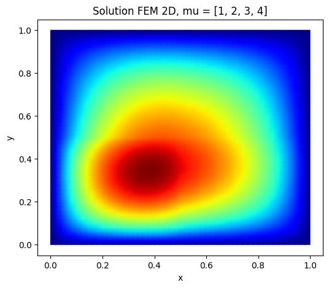
2) Complete POD (Construct_RB) and draw the first two reduced basis functions
############
""" POD """
############
def Construct_RB(NumberOfSnapshots=100,NumberOfModes=20,m=m):
...
# orthogonality test
return ReducedBasis
Nx=Ny = 100
m = MeshTri.init_tensor(
np.linspace(0.0, 1.0, Nx + 1),
np.linspace(0.0, 1.0, Ny + 1)
)
Phi=Construct_RB(NumberOfSnapshots=100,NumberOfModes=6,m=m)
ReducedBasis=Phi.T
fig, ax = plt.subplots()
im=m.plot(ReducedBasis[:,0], ax=ax, shading='gouraud',colorbar=True)
fig, ax = plt.subplots()
m.plot(ReducedBasis[:,1], ax=ax, shading='gouraud',colorbar=True)
plt.show()
eigenvalues: [1.46494815e-02 3.20452101e-04 2.33796072e-04 1.46100924e-04
1.08211182e-05 7.13138380e-06]
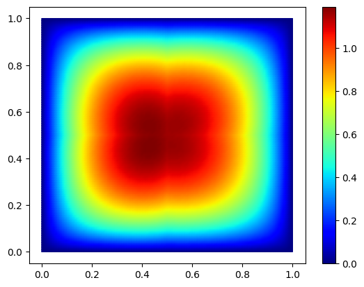
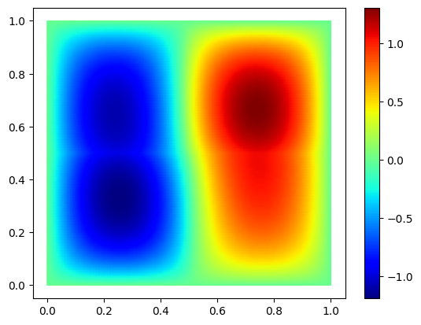
3) Complete Strong Greedy (Construct_RB_greedy) and draw the first two reduced basis functions
#####################
""" Strong Greedy """
#####################
def Construct_RB_greedy(NumberOfSnapshots=100,NumberOfModes=20,m=m):
print("strong Greedy")
basis = Basis(m, ElementTriP1())
L2=massMatrix.assemble(basis)
A11,A12,A21,A22, b, basis = FEMassembling(m)
Snapshots=[]
for i in range(NumberOfSnapshots):
mu = ... #random coefficients in [1, 10]
U = ...
Snapshots.append(U)
ReducedBasis=np.zeros((NumberOfModes,np.shape(U)[0])) #initialization
ReducedBasis[0,:]=... #first basis function = random first parameter or first snapshot in the list normalized
selected_indices=[...] # Index selected in NumberOfSnapshots
List_basis=[ReducedBasis[0,:]] #list of basis functions already generated
L2_basis=[L2.dot(List_basis[0])] # for the scalar product a_k=(u,Phi_k)
"""
Goal : Find j ( or mu_j) such that
mu_j= argmax_j || w_j|| where w_j= u_j - sum_k (u_j,Phi_k) Phi_k
"""
for n in range(1,NumberOfModes):
Greedy_best_score = - 1 # Greedy_best_score = max_j || w_j|| / ||u_j|| where w_j= u_j - sum_k (u_j,Phi_k) Phi_k
best_index = None # selected index j for w_j
best_w = None # best w_j
best_norm_w = None # best ||w_j||
for j in range(NumberOfSnapshots):
if not (j in selected_indices): #if index not yet in the reduced basis
u_j = ...
# w = u_j - sum_{k=0:n-1} (u_j,Phi_k) Phi_k
...
norm_w = ...
Greedy_score=norm_w
if Greedy_score > Greedy_best_score:
Greedy_best_score = ...
best_index = ...
best_w = ...
best_norm_w = ...
selected_indices.append(...) #adding the corresponding j in the list
List_basis.append(...)#orthonormalization in L2
L2_basis.append(L2.dot(List_basis[n]))
ReducedBasis[n,:]=List_basis[-1]
#orthogonality test
return ReducedBasis
Nx=Ny = 100
m = MeshTri.init_tensor(
np.linspace(0.0, 1.0, Nx + 1),
np.linspace(0.0, 1.0, Ny + 1)
)
basis = Basis(m, ElementTriP1())
Phi=Construct_RB_greedy(NumberOfSnapshots=100,NumberOfModes=6,m=m)
ReducedBasis=Phi.T
print(np.shape(ReducedBasis))
fig, ax = plt.subplots()
im=m.plot(ReducedBasis[:,0], ax=ax, shading='gouraud',colorbar=True)
fig, ax = plt.subplots()
m.plot(ReducedBasis[:,1], ax=ax, shading='gouraud',colorbar=True)
plt.show()
strong Greedy
(10201, 6)
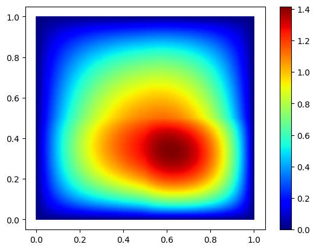
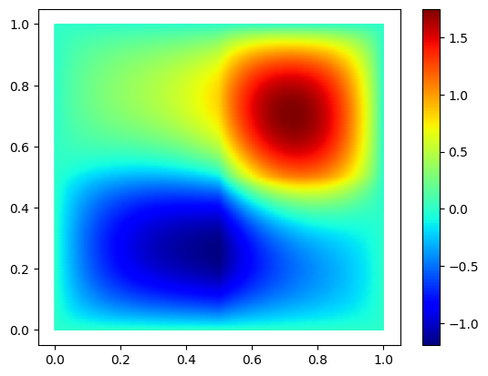
4) Solve the reduced problem with the affine decomposition of the operators
# Greedy-Galerkin
def solve_fem_rom(A,b,I,mu, Phi,m):
A11,A12,A21,A22=A
# Restricted reduced basis
Phi_I = Phi[:,I]
ReducedBasis_I=... #P
# Reduced system
# Interior DDL restriction
A11_I = A11[I][:, I]
A12_I = A12[I][:, I]
A21_I = A21[I][:, I]
A22_I = A22[I][:, I]
b_I = b[I]
A11r_I = ...
A12r_I = ...
A21r_I = ...
A22r_I = ...
A_rb_I = ...
b_rb_I= ...
coeff =... #A_rb alpha=B_rb
# ROM reconstructed
u_rb_I = ...
u_rb = np.zeros(A11.shape[0]) # 0 at the boundary
u_rb[I] = u_rb_I
return u_rb
mu = (1,2,3,4)
Nx=Ny = 100
m = MeshTri.init_tensor(
np.linspace(0.0, 1.0, Nx + 1),
np.linspace(0.0, 1.0, Ny + 1)
)
basis = Basis(m, ElementTriP1())
I=get_interior_dofs(basis)
A11,A12,A21,A22, b, basis = FEMassembling(m)
Phi=Construct_RB_greedy(NumberOfSnapshots=100,NumberOfModes=6,m=m)
start = time.time()
u_proj=solve_fem_rom([A11,A12,A21,A22],b,I,mu, Phi,m)
end = time.time()
print("Time :", end - start, "secondes")
fig, ax = plt.subplots()
m.plot(u_proj, ax=ax, shading='gouraud',colorbar=True)
plt.show()
strong Greedy
Time : 0.003924369812011719 secondes
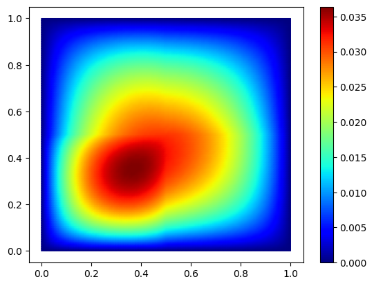
5) Plot the convergence for one test parameter mu=[1,2,3,4]
#### Convergence
mu = [1,2,3,4]
err_true=[]
err_rom=[]
hs=[]
m_ref = MeshTri.init_tensor(
np.linspace(0.0, 1.0, 250 + 1),
np.linspace(0.0, 1.0, 250 + 1)
)
# ref solution (test with nx=ny=250)
A11_ref, A12_ref,A21_ref,A22_ref, b_ref, basis_ref = FEMassembling(m_ref)
U_ref = FEMsolve(A11_ref, A12_ref,A21_ref,A22_ref,b_ref, basis_ref, mu)
Xref = basis_ref.doflocs # shape = (2, ndof)
L2=massMatrix.assemble(basis_ref)
# grid sizes to test
Ns = [20, 30, 40, 50]
for n in Ns:
print("n",n)
m = ...
basis = ...
A11,A12,A21,A22, b, basis = ...
U = ... # FEM solution
Phi=...
I=get_interior_dofs(basis)
Urom=solve_fem_rom([A11,A12,A21,A22],b,I,mu, Phi,m)
# Interpolation on ref mesh:
Uinterp=basis.interpolator(U)
U_on_mesh_ref=Uinterp(Xref)
Urominterp=basis.interpolator(Urom)
Urom_on_mesh_ref=Urominterp(Xref)
## print L2 error
true_error = ...
l2_true_error=...
#print(l2_true_error)
rom_error = ...
l2_rom_error=...
err_true.append(l2_true_error)
err_rom.append(l2_rom_error)
# ---------------------------
# Plot log-log convergence
# ---------------------------
hs = np.array(Ns)
err_true = np.array(err_true)
err_rom = np.array(err_rom)
plt.figure()
plt.loglog(hs, err_true, "o-", label=r"$\|u_{ref}-u\|_{L^2}$")
plt.loglog(hs, 1/(hs**2), "-", label=r"$h^2$")
plt.loglog(hs, err_rom, "s-", label=r"$\|u_{ref}-u_N\|_{L^2}$")
plt.gca().invert_xaxis() # optional: smaller h to the right
plt.xlabel(r"$h$")
plt.ylabel(r"$L^2$ error")
plt.grid(True, which="both")
plt.legend()
plt.show()
n 20
strong Greedy
n 30
strong Greedy
n 40
strong Greedy
n 50
strong Greedy
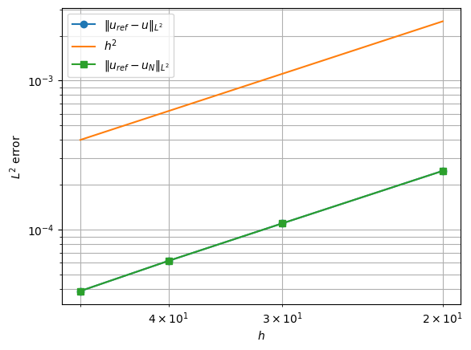
Part II: Aposteriori
1) Plot the convergence for one test parameter mu=[1,2,3,4] with aposteriori error estimate
$|r_N|_V^2 =r^T M_V^{-1} r$ where $M_V=A1+A2+A3 + A4$ (= diffusion(u,v,w))
from scipy.sparse.linalg import spsolve
def alpha_LB(mu):
"""
Lower bound of a
"""
return ...
def Construct_Delta_N(solve_XI,I,Phi, Ai_I_list, B_I, mu,basis):
## GLOBAL DELTA
# Full matrix
A11_I, A12_I,A21_I,A22_I=Ai_I_list
A_I = mu[0] * A11_I + mu[1] * A12_I + mu[2] * A21_I + mu[3] * A22_I
# Restricted reduced basis
Phi_I = Phi[:,I]
ReducedBasis_I=np.array(Phi_I).T #P
# Reduced system
A_rb = ReducedBasis_I.T @ A_I @ ReducedBasis_I
B_rb = ReducedBasis_I.T @ B_I
coeff =np.linalg.solve(A_rb, B_rb) #A_rb alpha=B_rb
# ROM reconstructed
u_rb_I = ReducedBasis_I@coeff
if basis!= None:
u_rb = np.zeros(basis.N) # 0 at the boundary
u_rb[I] = u_rb_I
# Interior residual
r_I = B_I - A_I@u_rb_I
# Dual norm of the residual : sqrt(r^T X^{-1} r)
# z= X_I^{-1} r_I
z = solve_XI(r_I)
# Estimator without alpha_LB
dual_norm = np.sqrt(np.abs(r_I @ z))
Delta_N = dual_norm / alpha_LB(mu)
return u_rb, dual_norm, Delta_N
### WITH OFFLINE/ONLINE STRATEGY
def offline_residual_data(solve_KI, I, Phi, A_I_list, l_I):
"""
offline quantities :
LKL[k,q] = l_k^T K^{-1} l_q
PAKAP[k,q] = P^T A_k^T K^{-1} A_q P
PAKL[k,q] = P^T A_k^T K^{-1} l_q
A_rb[q] = P^T A_q P
l_rb[q] = P^T l_q
----------
solve_KI : solve_KI(r) returns K_I z = r
I : interior indices
Phi : RB
A_I_list : list [A1_I, ..., A_Qa_I]
l_I
------
Return dict with offline objects
"""
# RB at the interior ddl
P = ...
nI, N = P.shape
Qa = len(A_I_list)
Ql = 1
# Offline operators reduction
A_rb_list = ...
l_rb = ...
# 1) LKL[k,q] = l_k^T K^{-1} l_q
# K z= l_q
...
LKL = ...
# 2) PAKAP[k,q] = P^T A_k^T K^{-1} A_q P
PAKAP = np.zeros((Qa, Qa, N, N))
...
# 3) PAKL[k,q] = P^T A_k^T K^{-1} l_q
PAKL = [] # or np.zeros((Qa, N))
for k in range(Qa):
# K z= l_q
PAKL.append(...) # shape (N,)
return {
"P": P,
"A_rb_list": A_rb_list,
"l_rb": l_rb,
"LKL": LKL,
"PAKAP": PAKAP,
"PAKL": PAKL
}
def online_residual_estimator(offline, I,theta_a, basis=None):
P = offline["P"]
A_rb_list = offline["A_rb_list"]
l_rb = offline["l_rb"]
LKL = offline["LKL"]
PAKAP = offline["PAKAP"]
PAKL = offline["PAKL"]
Qa = 4
Ql = 1
# Reduced system
A_rb = ...
alpha =...
# Reconstruction
u_rb_I = ...
u_rb = None
if basis is not None:
u_rb = np.zeros(basis.N)
u_rb[I] = u_rb_I
term_ll = ...
term_aa = 0.0
for q in range(Qa):
for k in range(Qa):
term_aa += ...
term_la = 0.0
for k in range(Qa):
term_la += ...
dual_norm_sq = ...
dual_norm = np.sqrt(np.abs(dual_norm_sq))
Delta_N = dual_norm / ...
return u_rb, dual_norm, Delta_N
#### Convergence
mu = [1,2,3,4]
## test with N=5 and 15 reduced basis functions
err_fem_H10=[]
err_rom_H10=[]
hs=[]
err_true_X = []
estimator = []
effectivity = []
m_ref = MeshTri.init_tensor(
np.linspace(0.0, 1.0, 250 + 1),
np.linspace(0.0, 1.0, 250 + 1)
)
# ref solution (test with nx=ny=250)
A11_ref, A12_ref,A21_ref,A22_ref, b_ref, basis_ref = FEMassembling(m_ref)
U_ref = FEMsolve(A11_ref, A12_ref,A21_ref,A22_ref,b_ref, basis_ref, mu)
Xref = basis_ref.doflocs # shape = (2, ndof)
L2=massMatrix.assemble(basis_ref)
K=diffusion.assemble(basis_ref)
# grid sizes to test
Ns = [20,30,40,50]
# -------------------------------------------------
# convergence
# -------------------------------------------------
for n in Ns:
print("n",n)
m = MeshTri.init_tensor(
np.linspace(0.0, 1.0, n + 1),
np.linspace(0.0, 1.0, n + 1)
)
basis = Basis(m, ElementTriP1())
A11,A12,A21,A22, b, basis = FEMassembling(m)
U = FEMsolve(A11,A12,A21,A22,b,basis,mu) # FEM solution
# Interpolation on ref mesh:
Uinterp=basis.interpolator(U)
U_on_mesh_ref=Uinterp(Xref)
Phi=...
# ROM + certification
I = get_interior_dofs(basis)
X_current_mesh=A11+A12+A21+A22
X_I = X_current_mesh[I][:, I]
solve_XI = factorized(X_I.tocsc())
# Interior DDL restriction
A11_I = A11[I][:, I]
A12_I = A12[I][:, I]
A21_I = A21[I][:, I]
A22_I = A22[I][:, I]
b_I = b[I]
offline = offline_residual_data(...)
Urom, dual_norm, Delta_N = online_residual_estimator( ... )
urom_interp = basis.interpolator(Urom)
Urom_on_mesh_ref = urom_interp(Xref)
## print error
fem_error = np.abs(...)
H10_fem_error=np.sqrt(...)
err_fem_H10.append(...)
rom_error = np.abs(...)
H10_rom_error=np.sqrt(...)
err_rom_H10.append(...)
# -------------------------
# True residual error in X norm
# -------------------------
rom_error = np.abs(U - Urom)
err_X=np.sqrt(rom_error@X_current_mesh.dot(rom_error))
err_true_X.append(err_X)
estimator.append(Delta_N)
eff = ...
effectivity.append(eff)
print(f" ||u_ref - u_h||_X = {H10_fem_error:.3e}")
print(f" ||u_ref - u_N||_X = {H10_rom_error:.3e}")
print(f" ||u_h - u_N||_X = {err_X:.3e}")
print(f" ||r_N||_X' = {dual_norm:.3e}")
print(f" Delta_N(mu) = {Delta_N:.3e}")
print(f" effectivity = {eff:.3e}")
n 20
strong Greedy
||u_ref - u_h||_X = 8.462e-03
||u_ref - u_N||_X = 8.464e-03
||u_h - u_N||_X = 3.505e-04
||r_N||_X' = 9.730e-04
Delta_N(mu) = 9.730e-04
effectivity = 2.776e+00
n 30
strong Greedy
||u_ref - u_h||_X = 5.356e-03
||u_ref - u_N||_X = 5.356e-03
||u_h - u_N||_X = 9.889e-05
||r_N||_X' = 2.828e-04
Delta_N(mu) = 2.828e-04
effectivity = 2.859e+00
n 40
strong Greedy
||u_ref - u_h||_X = 3.810e-03
||u_ref - u_N||_X = 3.830e-03
||u_h - u_N||_X = 6.270e-04
||r_N||_X' = 1.628e-03
Delta_N(mu) = 1.628e-03
effectivity = 2.597e+00
n 50
strong Greedy
||u_ref - u_h||_X = 3.470e-03
||u_ref - u_N||_X = 3.449e-03
||u_h - u_N||_X = 2.072e-04
||r_N||_X' = 6.233e-04
Delta_N(mu) = 6.233e-04
effectivity = 3.007e+00
hs = 1./np.array(Ns)
err_fem_H10 = np.array(err_fem_H10)
err_rom_H10 = np.array(err_rom_H10)
plt.figure(figsize=(7, 5))
plt.loglog(hs, err_fem_H10, "o-", label=r"$\|u_{ref}-u_h\|_{H10}$")
plt.loglog(hs, hs, "--", label=r"$h$")
plt.loglog(hs, err_rom_H10, "s-", label=r"$\|u_{ref}-u_N\|_{H10}$")
plt.gca().invert_xaxis()
plt.xlabel(r"$h$")
plt.ylabel(r"Error $H10$")
plt.grid(True, which="both")
plt.legend()
plt.title("Convergence FEM / ROM (norm $H10$)")
plt.show()
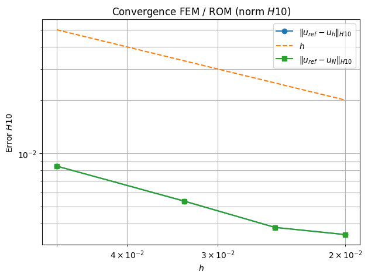
err_true_X = np.array(err_true_X)
estimator = np.array(estimator)
effectivity = np.array(effectivity)
plt.figure(figsize=(7, 5))
plt.loglog(hs, err_true_X, "o-", label=r"True error $\|u_h-u_N\|_X$")
plt.loglog(hs, estimator, "s--", label=r"Estimator $\Delta_N(\mu)$")
plt.gca().invert_xaxis()
plt.xlabel(r"$h$")
plt.ylabel(r"estimator")
plt.grid(True, which="both")
plt.legend()
plt.title("Certification a posteriori ")
plt.show()
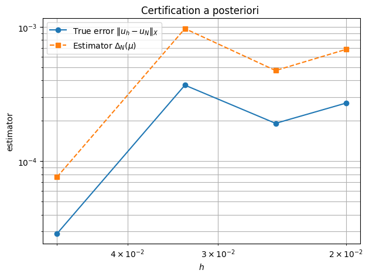
plt.figure(figsize=(7, 4))
plt.semilogx(hs, effectivity, "o-")
plt.gca().invert_xaxis()
plt.xlabel(r"$h$")
plt.ylabel("Effectivity")
plt.grid(True, which="both")
plt.title(r"Effectivity $\Delta_N / \|u_h-u_N\|_X$")
plt.show()
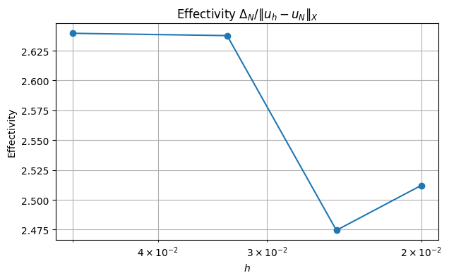
2) Weak Greedy: Add aposteriori error estimate to greedy algorithm
$|r_N|_V^2 =r^T M_V^{-1} r$ where $M_V=A1+A2+A3 + A4$ (= diffusion(u,v,w))
""" Greedy """
print("-----------------------------------")
print(" Offline ")
print("-----------------------------------")
def gram_schmidt_L2(u, basis_list, L2):
# u - sum_k (u,Phi) Phi
w = u.copy()
for phi in basis_list:
coeff = np.dot(w,L2.dot( phi))
w -= coeff * phi
norm_w = np.sqrt(np.dot(w,L2.dot( w)))
if norm_w < 1e-12:
return None
return w / norm_w
def Construct_RB_weak_greedy(NumberOfSnapshots=100,NumberOfModes=20,m=m):
basis = Basis(m, ElementTriP1())
I = get_interior_dofs(basis)
L2=massMatrix.assemble(basis)
#print("number of modes: ",NumberOfModes)
A11,A12,A21,A22, b, basis = FEMassembling(m)
X = A11+A12+A21+A22 # Matrix for the norm ||.||_X
X_I = X[I][:, I]
solve_XI = factorized(X_I.tocsc())
# Interior DDL restriction
A11_I = A11[I][:, I]
A12_I = A12[I][:, I]
A21_I = A21[I][:, I]
A22_I = A22[I][:, I]
b_I = b[I]
Params=[]
for i in range(NumberOfSnapshots):
mu = [...] #random coefficient in [1, 10]
Params.append(...)
U0=FEMsolve(A11,A12,A21,A22, b, basis, Params[0])
ReducedBasis=np.zeros((NumberOfModes,np.shape(U0)[0])) #initialization
U0=U0.flatten()
ReducedBasis[0,:]=... #first basis function = random first parameter or first snapshot in the list
selected_indices=[...] # Index selected in NumberOfSnapshots
List_basis=[ReducedBasis[0,:]] #list of basis functions already generated
L2_basis=[L2.dot(List_basis[0])] # for the scalar product a_k=(u,Phi_k)
"""
Goal : Find j ( or mu_j) such that
mu_j= argmax_j Delta_j
"""
for n in range(1,NumberOfModes):
Greedy_best_score = - 1 # Greedy_best_score = max_j Delta_j
best_index = None # selected index j for u_j
# HERE = OFFLINE PART OF DELTA
for j in range(NumberOfSnapshots):
if not (j in selected_indices): #if index not yet in the reduced basis
mu=...
,_,Delta_j=... #ONLINE PART OF DELTA
Greedy_score=...
if Greedy_score > ...:
Greedy_best_score = ...
best_index = ...
selected_indices.append(...) #adding the corresponding j in the list
U=...
List_basis.append(gram_schmidt_L2(U, List_basis, L2))#orthonormalization in L2
ReducedBasis[n,:]=List_basis[-1]
#orthogonality test
return ReducedBasis,Params
-----------------------------------
Offline
-----------------------------------
Nx=Ny = 100
m = MeshTri.init_tensor(
np.linspace(0.0, 1.0, Nx + 1),
np.linspace(0.0, 1.0, Ny + 1)
)
basis = Basis(m, ElementTriP1())
Phi,_=Construct_RB_weak_greedy(NumberOfSnapshots=100,NumberOfModes=6,m=m)
ReducedBasis=Phi.T
print(np.shape(ReducedBasis))
fig, ax = plt.subplots()
im=m.plot(ReducedBasis[:,0], ax=ax, shading='gouraud',colorbar=True)
fig, ax = plt.subplots()
m.plot(ReducedBasis[:,1], ax=ax, shading='gouraud',colorbar=True)
plt.show()
mu = (1,2,3,4)
Nx=Ny = 100
m = MeshTri.init_tensor(
np.linspace(0.0, 1.0, Nx + 1),
np.linspace(0.0, 1.0, Ny + 1)
)
basis = Basis(m, ElementTriP1())
A11,A12,A21,A22, b, basis = FEMassembling(m)
u_proj=solve_fem_rom(A11,A12,A21,A22,mu, Phi,m)
fig, ax = plt.subplots()
m.plot(u_proj, ax=ax, shading='gouraud',colorbar=True)
plt.show()
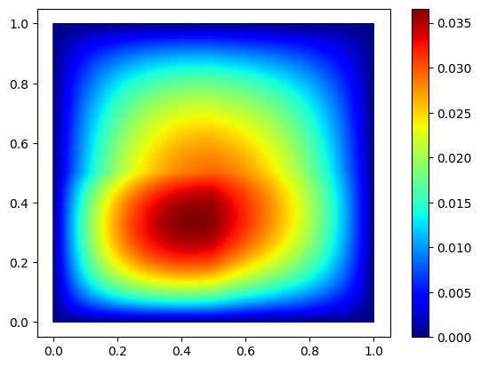
mu = [1,2,3,4]
err_true=[]
err_rom=[]
hs=[]
m_ref = MeshTri.init_tensor(
np.linspace(0.0, 1.0, 250 + 1),
np.linspace(0.0, 1.0, 250 + 1)
)
A11_ref, A12_ref,A21_ref,A22_ref, b_ref, basis_ref = FEMassembling(m_ref)
U_ref = FEMsolve(A11_ref, A12_ref,A21_ref,A22_ref,b_ref, basis_ref, mu)
# Ref interopolant
u_ref_interp = basis_ref.interpolator(U_ref)
# grid sizes to test
Ns = [20, 30, 40, 50]
for n in Ns:
print("n",n)
m = MeshTri.init_tensor(
np.linspace(0.0, 1.0, n + 1),
np.linspace(0.0, 1.0, n + 1)
)
basis = Basis(m, ElementTriP1())
A11,A12,A21,A22, b, basis = ...
U = ...
Phi,_=...
L2=massMatrix.assemble(basis)
Uproj=...
#Interpolated solution
X = basis.doflocs # shape = (2, ndof)
U_ref_on_mesh = u_ref_interp(X)
## print error
true_error = ...
l2_true_error=...
rom_error = ...
l2_rom_error=...
# L2 errors
err_true.append(l2_true_error)
err_rom.append(l2_rom_error)
# ---------------------------
# Plot log-log convergence
# ---------------------------
hs = np.array(Ns)
err_true = np.array(err_true)
err_rom = np.array(err_rom)
plt.figure()
plt.loglog(hs, err_true, "o-", label=r"$\|u_{ref}-u\|_{L^2}$")
plt.loglog(hs, 1/(hs**2), "-", label=r"$h^2$")
plt.loglog(hs, err_rom, "s-", label=r"$\|u_{ref}-u_N\|_{L^2}$")
plt.gca().invert_xaxis() # optional: smaller h to the right
plt.xlabel(r"$h$")
plt.ylabel(r"$L^2$ error")
plt.grid(True, which="both")
plt.legend()
plt.show()
Elise Grosjean
Assistant Professor
My research interests include numerics, P.D.E analysis, Reduced basis methods, inverse problems.